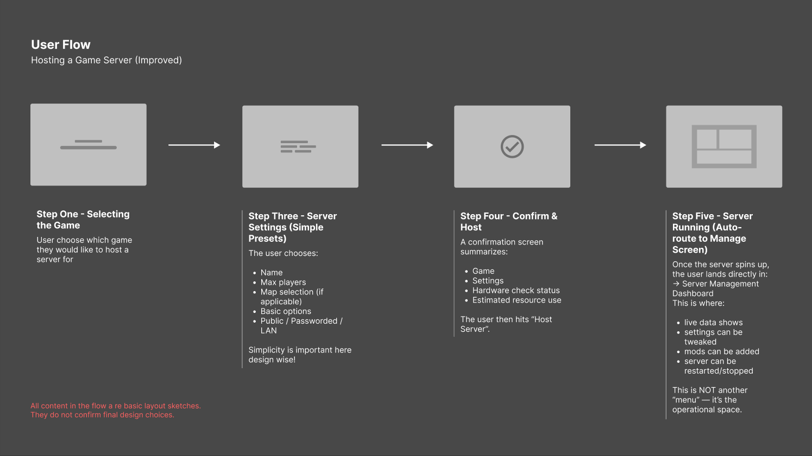

Case Study
Systems Thinking w/ TennaJam
A fictional product concept simplifying dedicated gaming server setup for users without networking knowledge.
Overview
Purpose
TennaJam explores how a technical server setup process can be reduced into a clearer, more guided user flow.
Note: Fictional product concept focused on journey mapping, flow simplification, and reducing technical friction.
Problem
What I Found
- Manual server setup depends on networking knowledge
- Users rely on scattered guides, forums, and documentation
- Configuration, ports, and firewall settings create major friction
- Troubleshooting starts before the server is even usable
Solution
What Changed
- Mapped the current manual setup journey
- Identified where users lose clarity and confidence
- Condensed the process into a simpler guided flow
- Reduced technical decision-making during setup
Impact
Product Value
The improved flow makes server setup easier to understand, reducing confusion for users who want control without needing technical networking experience.
Result: clearer guidance, reduced setup friction, and a more approachable path to launching a dedicated gaming server.
Design
Journey & Flow

